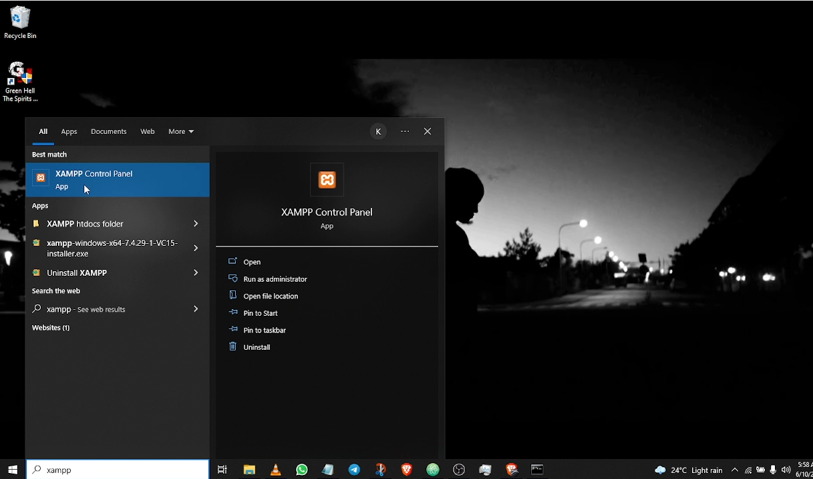
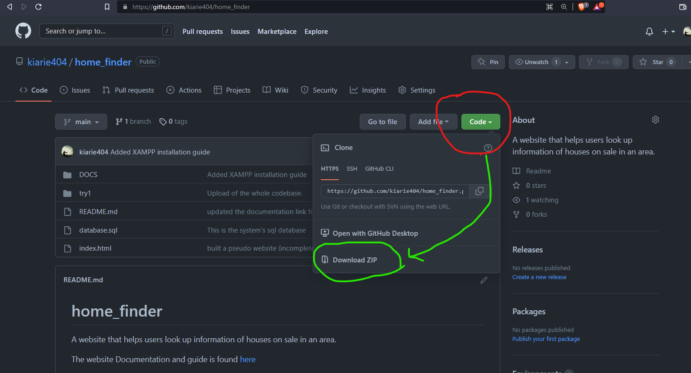
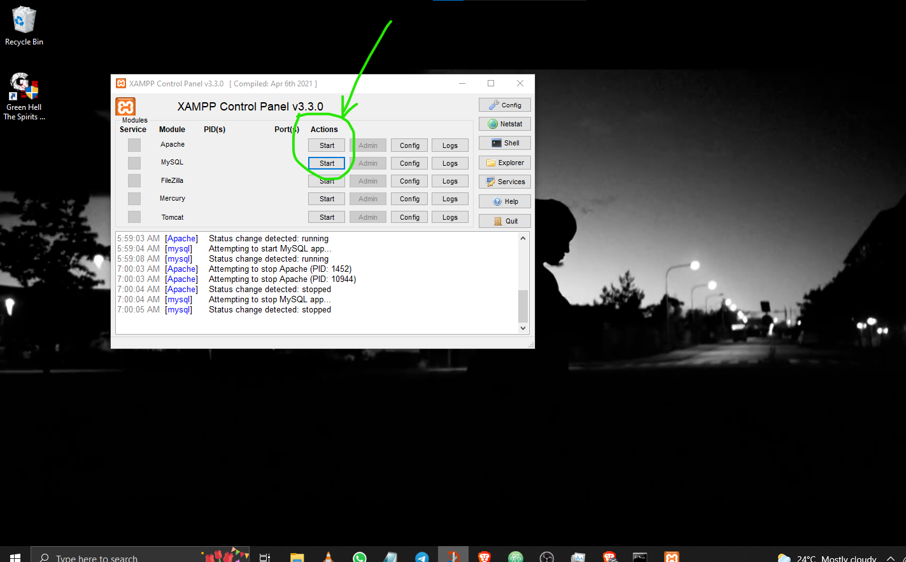
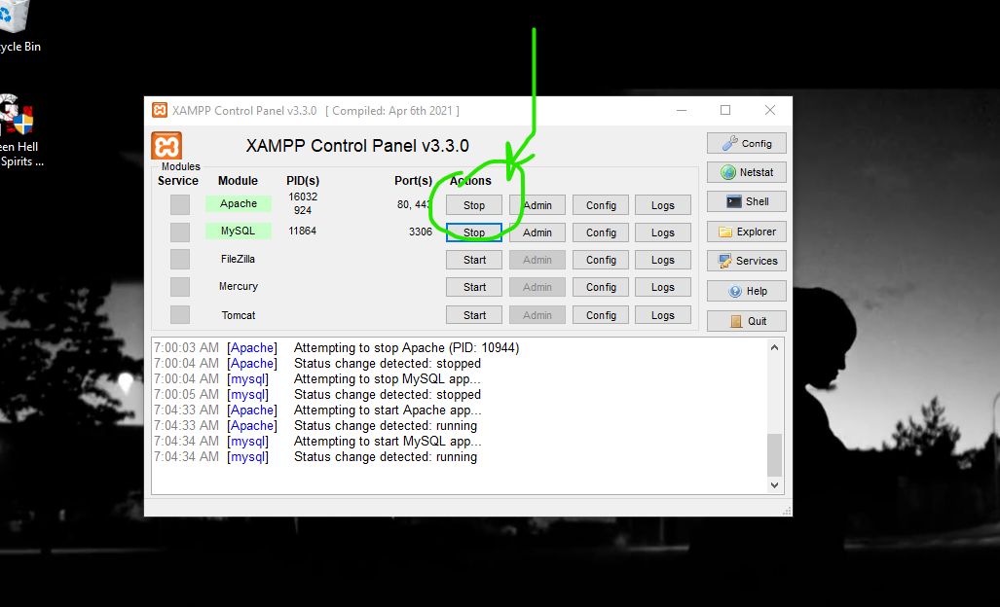
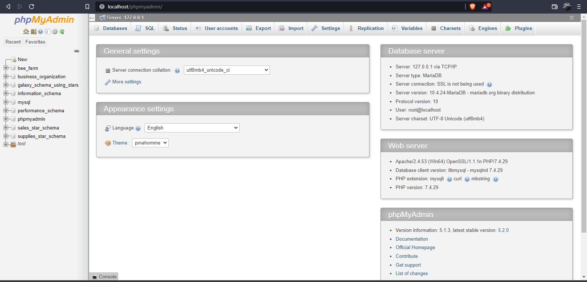
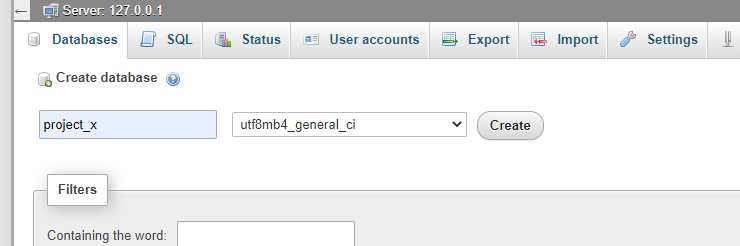
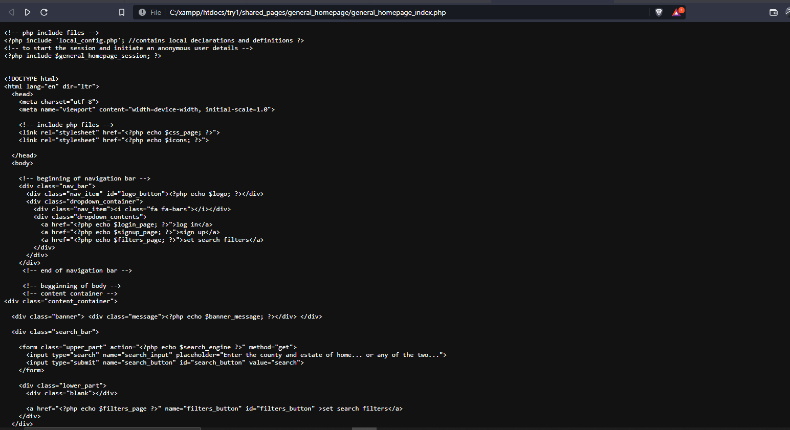
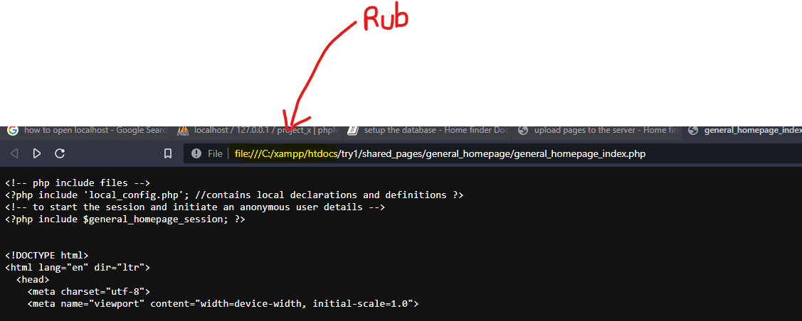
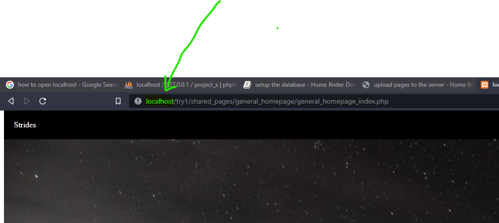

Introduction
The Home finder system is a website where :
- users can enter keywords such as location and type of housing in a search bar,
and in turn they get search results displaying available homes on sale. - Users can set search filters to customize their search results.
Administrators on the other hand can ;
- Perform database manipulation. (Add, remove, lookup, modify properties on sale)
However, this website does not offer :
- Payment services between home buyers and sellers.
- Communication services between buyers and sellers.
We can just say, this is a home-display application.
Setting things up
The Home finder is implemented as a "localhost" website. This means that for now, it has not been deployed to an external host.
The computer on which you will run this application will also act as the server.
Your computer will be both the server and the client.
Prerequisites
The user needs to have :
- A server : (XAMPP server for Windows/Linux).
- A web browser : (All browsers are supported).
Next up, we cover the step by step installation guide.... :)
setup XAMPP or a server software
The purpose of having the XAMPP software is so that we can get :
- a local server
- phpmyadmin relation table Database designer.
If you already have XAMPP installed, you can ignore the rest of this page.
Visit this page : XAMPP website and download the setup file that is corresponding to your operating system.
If the file is zipped, unzip it and run the setup.
The XAMPP application will automatically install itself
It will also add its bin to the PATH, no need to worry.
Confirming that XAMPP has been installed:
If you are running a Windows machine :
- Go to the Windows search and type : xampp.
- Check if the XAMPP control panel shows up like the Image below.

setup the database
Now it is time to import the database. This is going to be tricky.
Download the database .sql file
-
visit this page
-
press the button named "code" as seen in the image below :
Download the zipped code.

- Extract the zipped package. Let us refer to the unzipped package as "unzipped_folder" from here on... cool? --- cool.
Start the Xampp server.
-
Open up the xampp control panel as shown below:
-
You will get something like this :

Click start on the two circled buttons, that way you make the server to be ready to deal with sql databases.
-
You will get something like this :

Create dummy database that has the same name as the database to be imported
-
Start up your browser.
-
In the search bar, type and search : "http://localhost/phpmyadmin/".
You will get a screen like this :
-
Press "New" to create a new database, Explicitly name it : "project_x".
The naming is VERY IMPORTANT. Name it "project_x"
Import the database.sql to Xampp server
-
Under the project_x database, click the "import" button.
-
click the "choose file" button.
-
Navigate to the "unzipped file" and choose the database.sql file.
-
Press "Go" at the bottom of the screen
Hurray, Phew.
So I assume you succeeded in importing this whole thing.
The hard part is done.
You are now like Thanos ; "It is done."
Mama I touched the net.
upload pages to the server
Copy the pages from the source code.
-
Remember that folder you downloaded from the github repo?. Navigate to one of its sub folder named "try1".
-
Copy try1 folder. The try1 folder contains the code for the website pages.
Upload the pages to the server htdocs.
-
Open your C drive and navigate to the following folder : C:\xampp\htdocs
-
Paste the "try1" folder under the "C:\xampp\htdocs" directory
You're done
Running the website
Intro
As you already know, for you to access websites, ou have to be connected to a server ia the internet.
But in our case, our computer is both the client and the server.
For you to access the website, you have to "create a form of Internet" by switching on the server anytime you want to run the website.
open the homepage using a browser.
-
Make sure that the XAMPP server is running and both Apache and Mysql modules have already started
-
Navigate to : C:\xampp\htdocs\try1\shared_pages\general_homepage
-
Open : general_homepage_index.php using a browser of your choice.
You will see a page like this :
make the page user-friendly
- You will rub off the highlighted part of the URL and replace it with the word localhost.
As follows:
-
Rub of the "file:///C:/xampp/htdocs" part of the URL 
-
Replace the rubbed part with "localhost" 
-
reload the page.
Now you can use the website as you wish.
That was a tough job.
It shouldn't be that way, sorry. 😅